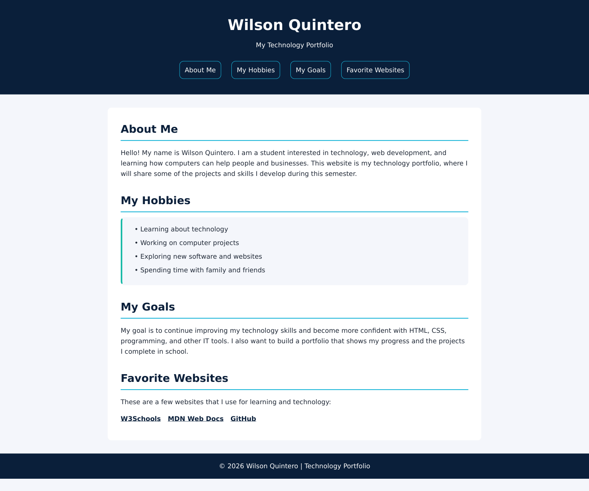
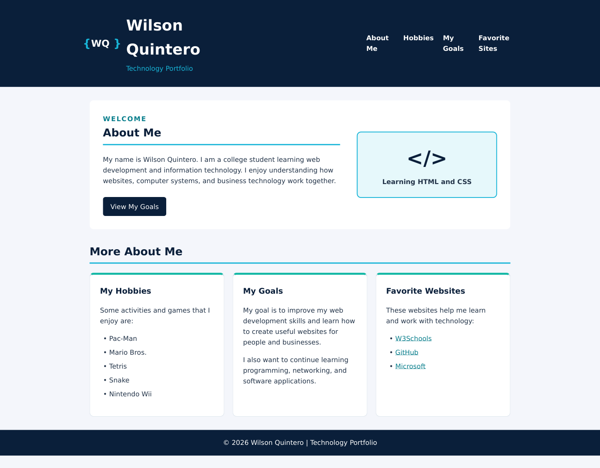
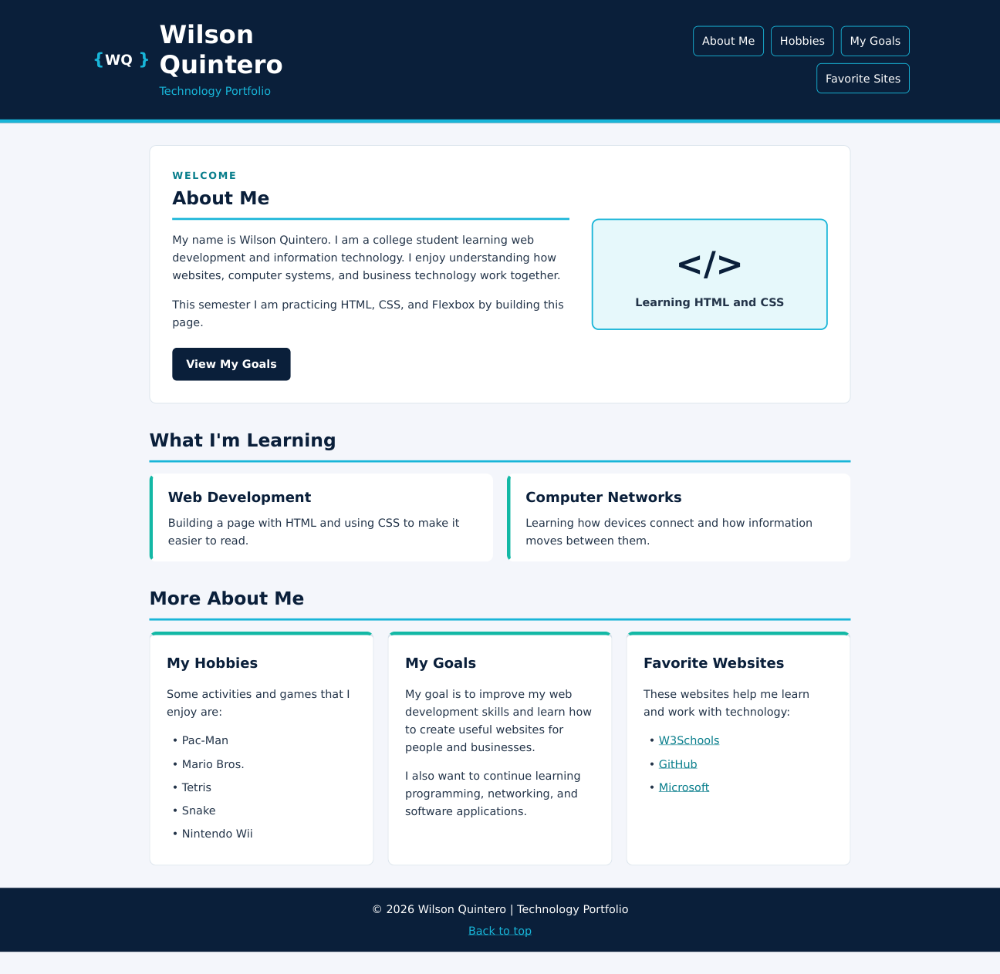
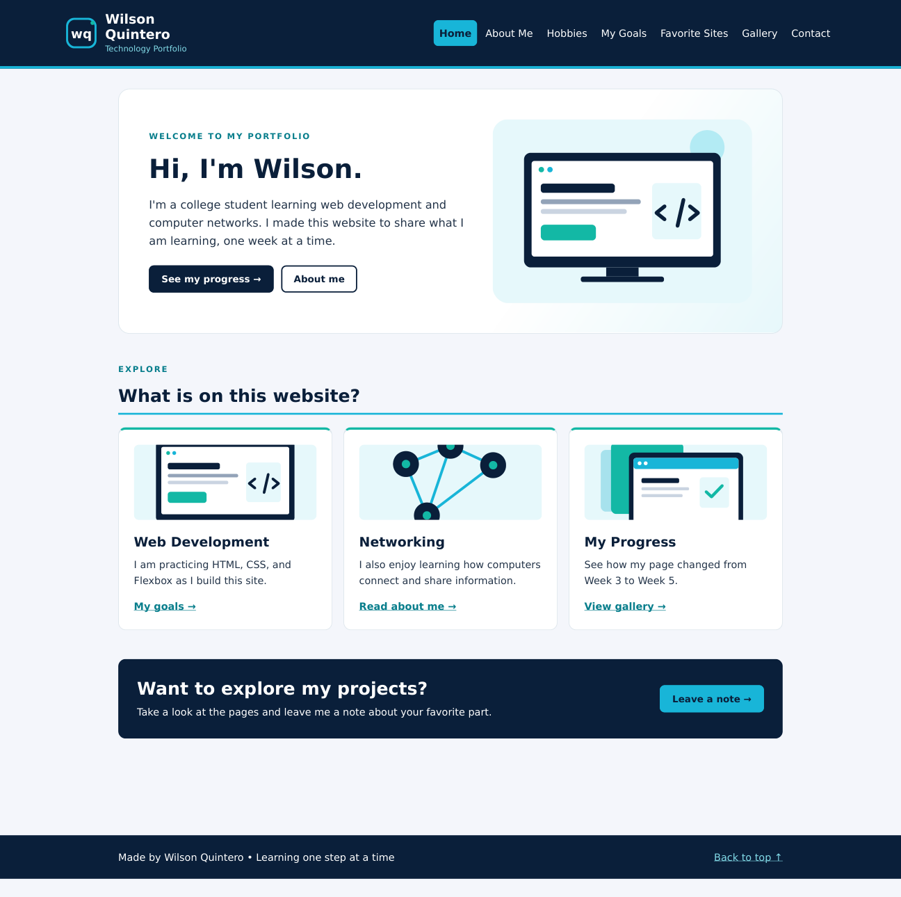
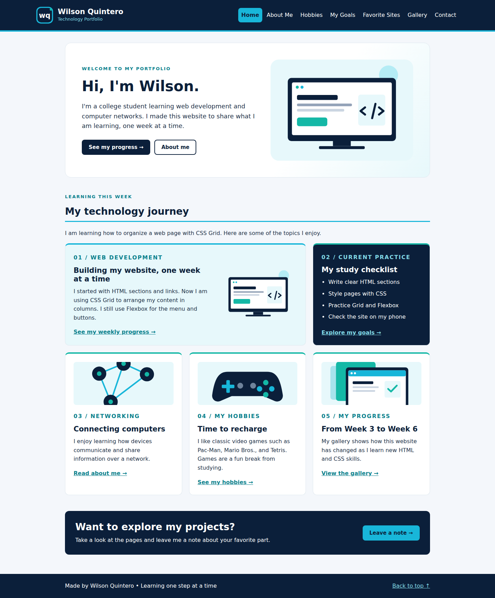
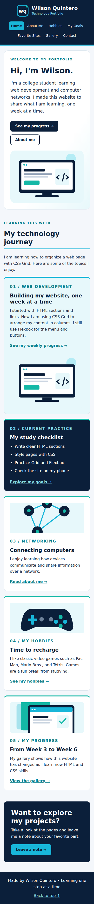

Which version do you like best?
Use the form to leave a note. This class project saves the note in your browser.






Use the form to leave a note. This class project saves the note in your browser.